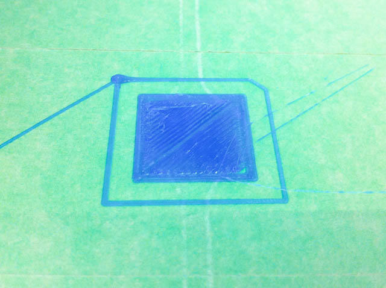
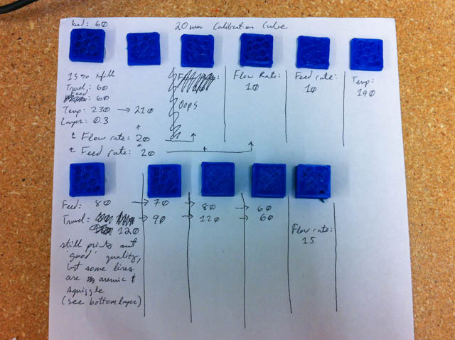
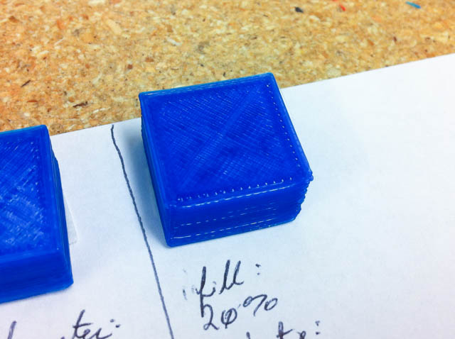

In order to change a 3d file into something that the Duplicator 4 can print, we have to slice it. Slicing will generate gcode specific for this machine based on settings we have set. The controller on the machine uses the instructions from the gcode to then move the motors, control the temperature.
Replicator G is the host software that we will be using. This software is able to control the Duplicator 4, as well as has Skeinforge built in to slice models.
There are other options out there, using Replicator G and Skeinforge is just one of the ways. When investigating the other ways, make sure that it is compatible with the firmware running on the Duplicator 4, which is Sailfish.
Here is a good image detailing the toolchain options for RepRaps.
The below settings and info was made for use with PLA filament. For other filament like NinjaFlex and ABS, you may have to change a few of the settings.
Step 1
Download & install Replicator G
Go to Machine -> Machine Type (Driver) and set it to The Replicator Dual
Step 2
Download SparQ_Wanhao Skeinforge profile
Install it to here:
Windows:
/Users/[USERNAME]/.replicatorg/sf_[VER]_profiles/
Mac:
~/.replicatorg/sf_[VER]_profiles/
Step 3
Set the Print-O-Matic settings:
- Slicing Profile: SparQ Wanhao
- Settings tab -> Print temperature: 190
- Settings tab -> Feed rate: 70
- Settings tab -> Travel feedrate: 90
- Plastic tab -> Filament diameter: 1.8
Step 4
The temperature of the build platform can be changed in the gcode. So you'll be able to see it after you slice a model. Find this line near the top and change S50 to whichever value you would want- like S110 for 110.
- M109 S50 T0 (set HBP temperature)
Calibration
Here is how the machine was calibrated to create the Skeinforge profile. I made small adjustments and would print a partial test cube. Started out by making fure the first layers printed well, then checking the infill and layer alignment, then the final top layers and surface finish.
  If you ever need to quickly adjust some of the settings because the PLA isn't extruding properly, try first increasing the extruder temperature. The filament diameter can also be changed to adjust the effective flow rate from within the Print-o-matic settings. Big changes for this are not recommended though.
Next
Next up check out the levelling routine and an online gcode viewer to see how the model was sliced